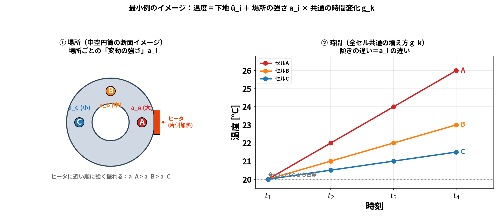
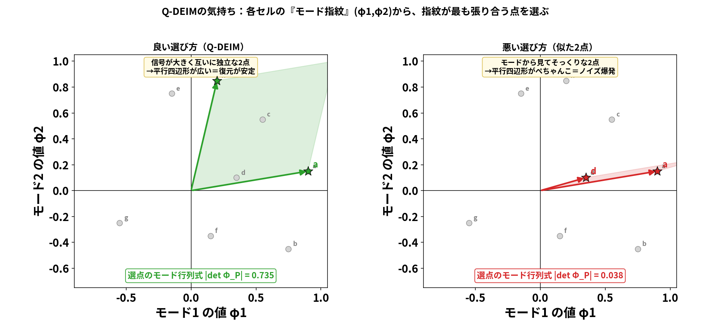
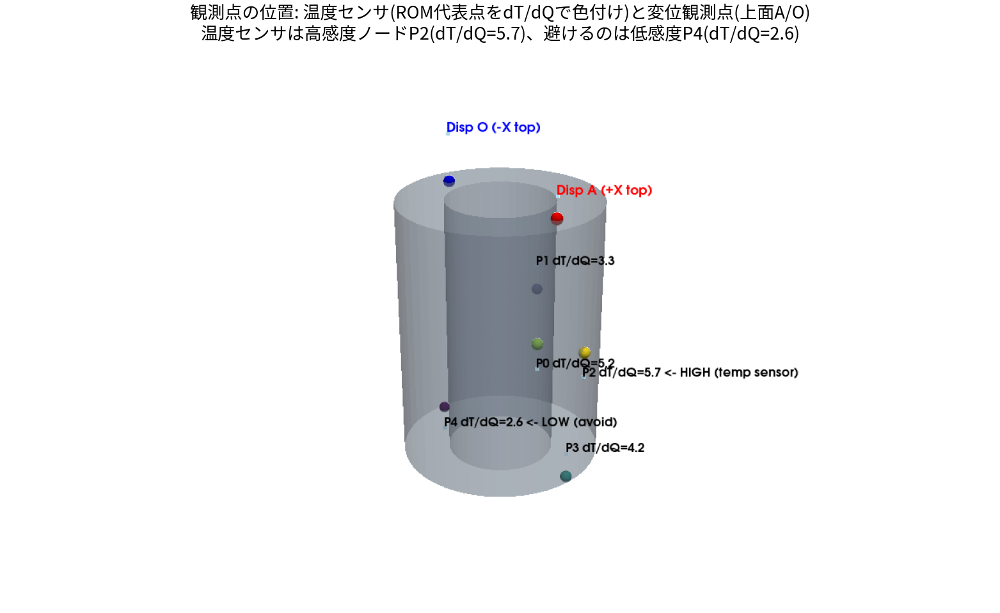
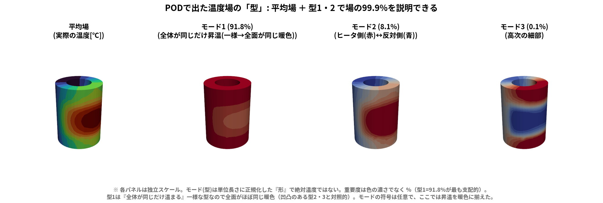
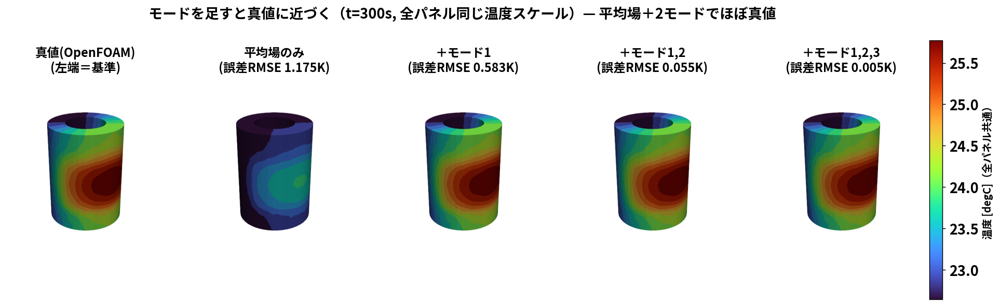
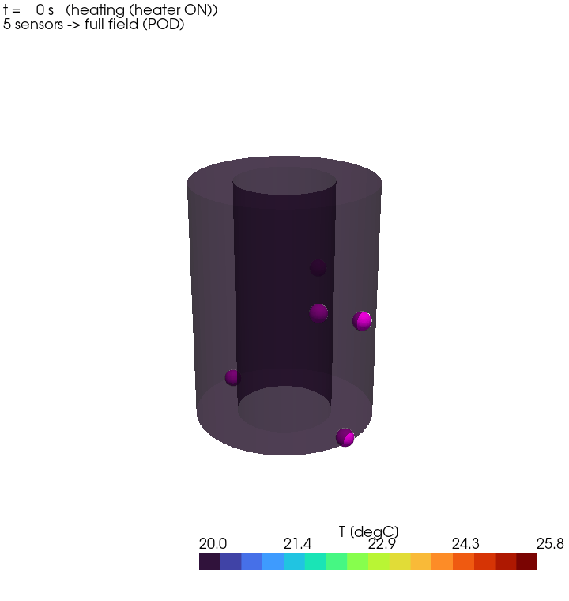
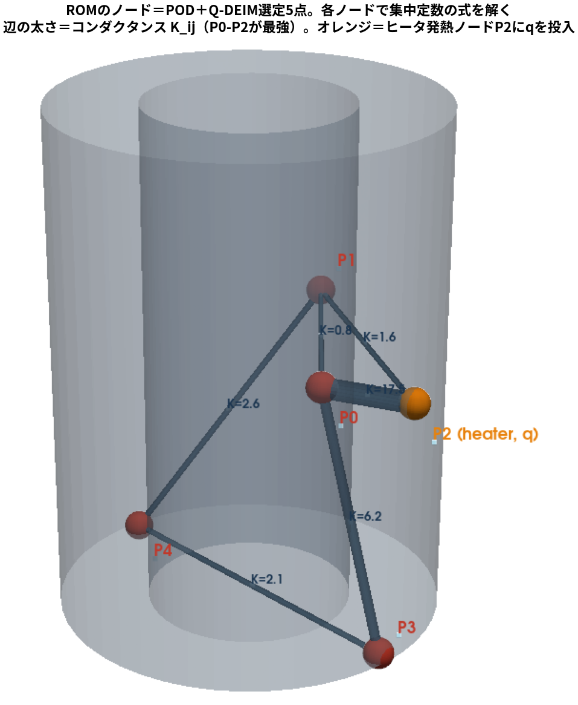
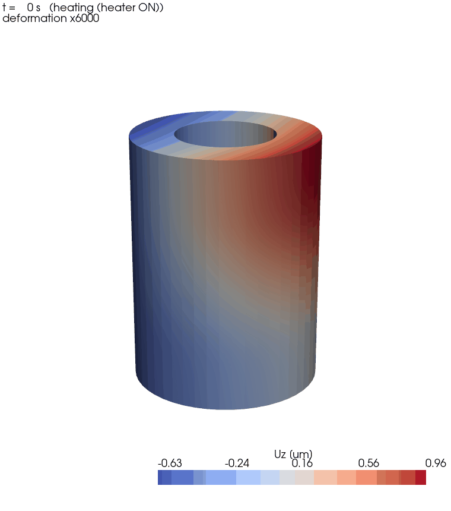
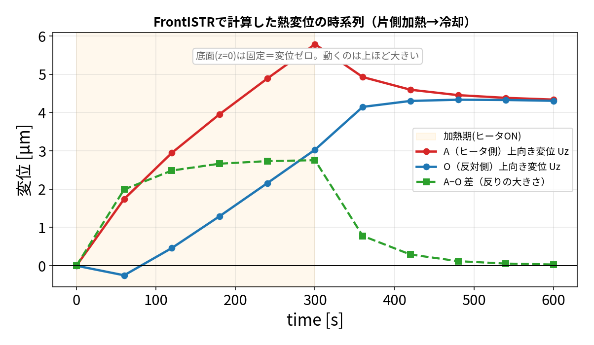
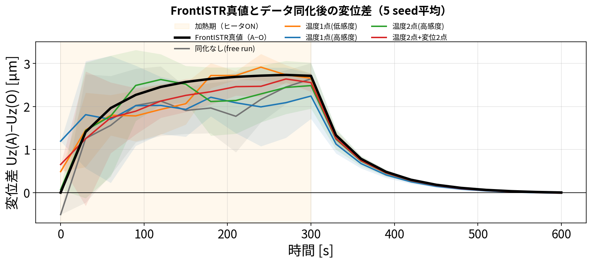

前回までの OI（blog_002）と EnKF（blog_003）は、予報モデルを毎サイクル回すのが前提でした。 ところが本物の予報モデルは OpenFOAM CHT ＋ FrontISTR の連成解析。1サイクル回すだけで分オーダーかかり、 EnKF のように 何十もの分身 × 何サイクル も回すと、現実的な時間で終わりません。
そこでこの回は、予報モデルだけを軽い ROM（縮約モデル）に置き換える話です。ポイントは1つ:
ROM のノード（代表点）を「勘」で置かず、POD でデータから系統的に選ぶ。
「PODでモードを出す → Q-DEIMで代表点を選ぶ → その点でROMを組んで校正 → EnKF/OIの予報を高速化」 という流れを、数式 → 小さな行列の手計算 → 実データの図の順で追います。
flowchart LR
A["OpenFOAM CHT<br/>固体20,696セルの温度履歴"] --> B["① POD(SVD)<br/>場の型(モード)を抽出"]
B --> C["② Q-DEIM<br/>代表5点を選定"]
C --> D["③ 5点でROMを組み校正<br/>残差0.014K"]
D --> E["④ 軽いROMでEnKF/OI<br/>0-600sが約31ms"]EnKF（blog_003）は、分身（アンサンブル）1つ1つについて予報モデルを前進させます。ざっくり 計算量 ≒（分身の数）×（サイクル数）×（予報モデル1回のコスト） です。
一方、この記事で作る POD選定5点ROM は、0→600秒の前進積分が約31ミリ秒（実測）。 分身200個 × 10サイクルでも数十秒で終わります。予報モデルをROMに差し替えるだけで、 同じ EnKF/OI が桁違いに軽くなる、というのが狙いです。
「ROMにしたらもうOpenFOAMは要らない？」と思いがちですが、そうではありません。 処理は オフライン（準備） と オンライン（本番） に分かれます:
| フェーズ | 何をする | OpenFOAM(CHT) | 回数 |
|---|---|---|---|
| オフライン（準備） | CHTでスナップショット生成 → POD → Q-DEIM → 校正 | 必須（ROMの材料） | 1回だけ |
| オンライン（本番） | 軽いROMでEnKF/OIを回して温度・ \(Q\) ・ \(h\) を推定 | 使わない（ROM 31ms） | 何十〜何百回 |
まず言葉で。ある時刻の温度場（全セルの温度）を1枚の写真だと思ってください。 シミュレーションは時刻 \(t_1,t_2,\dots,t_m\) の写真を \(m\) 枚くれます。 この写真を 1枚＝1列 にして横に並べたのが、スナップショット行列 \(S\) です （行＝場所＝セル、列＝時刻。 \(u_i(t_k)\) ＝セル \(i\) の時刻 \(t_k\) の温度）:
\[S=\begin{pmatrix} u_1(t_1) & u_1(t_2) & \cdots & u_1(t_m)\\ u_2(t_1) & u_2(t_2) & \cdots & u_2(t_m)\\ \vdots & \vdots & \ddots & \vdots\\ u_N(t_1) & u_N(t_2) & \cdots & u_N(t_m) \end{pmatrix}\]
（横に読むと 各行が1セルの時間履歴、縦に読むと 各列が1時刻の温度場（1枚の写真））
次に 各セルから「そのセル自身の時間平均」を引きます。平均は下地なので、そこからの変動だけを見たいからです。 セル \(i\) の時間平均を \(\bar u_i=\frac1m\sum_k u_i(t_k)\) とし、これを各行から引いた行列を \(X\) と書きます:
\[X=\bigl[\,u(t_1)-\bar u,\ \dots,\ u(t_m)-\bar u\,\bigr],\qquad X_{ik}=u_i(t_k)-\bar u_i.\]
この 変動だけの写真束 \(X\) から共通の「型」を取り出すのが、次のPODです。
場を1つの単位ベクトル \(\varphi\) （ \(\lVert\varphi\rVert=1\) ）で最もよく表す、とは 各スナップショットの \(\varphi\) 方向成分の二乗和を最大化すること:
\[\max_{\lVert\varphi\rVert=1}\ \sum_{k=1}^{m}\bigl|\varphi^{\mathsf T}(u(t_k)-\bar u)\bigr|^2 =\max_{\lVert\varphi\rVert=1}\ \varphi^{\mathsf T}\bigl(XX^{\mathsf T}\bigr)\varphi.\]
ラグランジュ乗数 \(\lambda\) で微分してゼロと置くと、固有値問題になります:
\[\boxed{\ (XX^{\mathsf T})\,\varphi=\lambda\,\varphi\ }\]
\(X\) を特異値分解 \(X=U\Sigma V^{\mathsf T}\) すると
\[XX^{\mathsf T}=U\Sigma V^{\mathsf T}V\Sigma U^{\mathsf T}=U\,\Sigma^2\,U^{\mathsf T}.\]
つまり \(U\) の各列がそのまま \(XX^{\mathsf T}\) の固有ベクトル＝PODモード、 \(\sigma_k^2\) が固有値。 巨大な \(XX^{\mathsf T}\) （ \(N\times N\) ）を作らず、SVD一発でPODが得られます。 しかも上位 \(r\) モードで打ち切った近似は、ランク \(r\) の全行列の中でフロベニウス誤差を最小にする （Eckart–Young の定理）＝「PODは最もエネルギー効率のよいモード分解」です。
ここで混乱しやすい3語を整理します。まず大前提:
SVD ＝ 特異値分解（Singular Value Decomposition）は 同じもの。 英語の略称か日本語かの違いだけで、中身は1つ。だから区別すべきは実質 「SVD（＝特異値分解）」と「POD」の2つです。
| 用語 | 正体 | 立場 |
|---|---|---|
| 特異値分解 | SVD の日本語名（＝SVDそのもの） | ― |
| SVD | \(X=U\Sigma V^{\mathsf T}\) の行列分解 | 汎用の 計算道具 |
| POD | 場のエネルギー最大の直交モードを取る | 目的・解釈（平均除去・重み・エネルギー意味づけを追加） |
つまり 「POD は SVD と別物」ではなく、SVD は POD を計算する道具。POD側には「①平均を引く ②（体積などで重みを付けた）エネルギーで最良性を測る ③上位数モードで場を代表させる」という”味付け”が加わります。 統計の PCA（主成分分析） や確率過程の Karhunen–Loève 展開 も、呼び名が違うだけで本質は同じ仲間です。
（別解：SVDを使わず \(XX^{\mathsf T}\) の固有値分解や、時間側の小さい \(X^{\mathsf T}X\) を解く”スナップショット法”でも、同じPODモードが得られます。SVDはその中で最も安定・簡単な計算法という位置づけ。）
言葉だけでは腑に落ちないので、3セル(A,B,C) × 4時刻の最小例で最後まで計算します。 数字だと構造が見えにくいので、文字式で進めます。ポイントは、各セルの温度を
\[u_i(t_k)=\bar u_i+a_i\,g_k,\qquad \sum_{k=1}^4 g_k=0\]
と置くこと。ここで \(\bar u_i\) は 下地（時間平均）、 \(a_i\) は その場所の変動の強さ、 \(g_k\) は 全セル共通の時間プロファイル（平均を引いてあるので総和ゼロ）。 「場所ごとの強さ \(a_i\)」と「時間の動き \(g_k\)」の積で温度が決まる、という素直な仮定です。
イメージはこうです ―― 中空円筒を片側から加熱し、ヒータ側から順に A（強）・B（中）・C（弱）の3セルを取ります。 3セルとも同じように昇温しますが（共通の \(g_k\) ）、ヒータに近いほど大きく振れます（ \(a_A>a_B>a_C\) ）:

左＝場所（断面イメージ）：ヒータに近い順に「変動の強さ」 \(a_i\) が大きい。 右＝時間：3セルは同じ増え方 \(g_k\) を共有し、傾き（振れ幅）の違いが \(a_i\) の違い。 この「場所 \(a_i\) × 時間 \(g_k\) 」という掛け算の形が、次で効いてきます。
| セル | \(t_1\) | \(t_2\) | \(t_3\) | \(t_4\) | 時間平均 |
|---|---|---|---|---|---|
| A（ヒータ側） | \(\bar u_A+a_A g_1\) | \(\bar u_A+a_A g_2\) | \(\bar u_A+a_A g_3\) | \(\bar u_A+a_A g_4\) | \(\bar u_A\) |
| B（中間） | \(\bar u_B+a_B g_1\) | \(\bar u_B+a_B g_2\) | \(\bar u_B+a_B g_3\) | \(\bar u_B+a_B g_4\) | \(\bar u_B\) |
| C（反対側） | \(\bar u_C+a_C g_1\) | \(\bar u_C+a_C g_2\) | \(\bar u_C+a_C g_3\) | \(\bar u_C+a_C g_4\) | \(\bar u_C\) |
ヒータ側ほど強く反応するので \(a_A>a_B>a_C>0\) 。各セルから自分の平均 \(\bar u_i\) を引くと、 PODに渡す変動行列 \(X\) は 場所ベクトル \(a\) と 時間ベクトル \(g\) の外積 になります:
\[X=\begin{pmatrix}a_A g_1 & a_A g_2 & a_A g_3 & a_A g_4\\ a_B g_1 & a_B g_2 & a_B g_3 & a_B g_4\\ a_C g_1 & a_C g_2 & a_C g_3 & a_C g_4\end{pmatrix} =\begin{pmatrix}a_A\\ a_B\\ a_C\end{pmatrix}\bigl(g_1,\ g_2,\ g_3,\ g_4\bigr) =a\,g^{\mathsf T}.\]
この時点で \(X=a\,g^{\mathsf T}\) ＝ランク1（1つの空間パターン × 1つの時間プロファイル）。 「場の変動は、たった1つの型で説明できる」ことが、もう形から見えています。
\(X=a\,g^{\mathsf T}\) を代入するだけです。 \(g^{\mathsf T}g=\lVert g\rVert^2\) はただのスカラーなので、
\[XX^{\mathsf T}=a\,g^{\mathsf T}\,g\,a^{\mathsf T}=\lVert g\rVert^2\,a\,a^{\mathsf T},\qquad \lVert g\rVert^2=\sum_{k=1}^4 g_k^2.\]
右辺は 場所ベクトル \(a\) の外積 \(a a^{\mathsf T}\) の定数倍 ＝ やはり ランク1。 時間プロファイル \(g\) は「大きさ \(\lVert g\rVert^2\) 」という1個の数にまとまり、 空間の型は \(a\) だけで決まることが読み取れます。
ランク1行列 \(XX^{\mathsf T}=\lVert g\rVert^2\,a a^{\mathsf T}\) の非ゼロ固有ベクトルは \(a\) の向き、固有値はその係数です。 PODモード \(\varphi_1\) とエネルギー \(\lambda_1\) は
\[\varphi_1=\frac{a}{\lVert a\rVert},\qquad \lambda_1=\sigma_1^2=\lVert g\rVert^2\,\lVert a\rVert^2.\]
他の固有値はすべて0なので、エネルギー比は
\[\frac{\lambda_1}{\mathrm{tr}(XX^{\mathsf T})}=\frac{\lVert g\rVert^2\lVert a\rVert^2}{\lVert g\rVert^2\lVert a\rVert^2}=1,\]
すなわち モード1だけで100％。 モード \(\varphi_1=a/\lVert a\rVert\) の中身は「各セルの変動の強さの比 \(a_A:a_B:a_C\)」そのもの。 つまり PODモードとは「どの場所がどれだけ強く動くか」という空間パターンで、 \(\bar u\) ＝下地、 \(\varphi_1\) ＝そこからの変動の型、という役割分担です。
（本物の場は完全なランク1ではありませんが、後で見るように モード1で91.8％まで説明でき、構図は同じです。）
Q-DEIM は「少数のセンサで場全体を復元するのに、どこにセンサを置けばいいか」を決める方法です。 名前は難しいですが、やっていることは直感的なので、順を追ってほぐします。
§3で見たように、温度場は「平均場＋モードの足し合わせ」で表せます:
\[\hat u=\bar u+a_1\varphi_1+a_2\varphi_2+\dots+a_r\varphi_r=\bar u+U_r\,a.\]
ここで未知は モードの混ぜ具合 \(a=(a_1,\dots,a_r)\) の \(r\) 個だけ。 \(r\) 個の未知を決めるには \(r\) 個の測定があればいい ―― これが「少数点でROMを組める」理由です。 \(r\) 点 \(P\) で測ると、その点でのモードの値だけを並べた \(r\times r\) 行列 \(U_{r,P}\) を使って、連立方程式
\[U_{r,P}\,a=u_P-\bar u_P\quad\Rightarrow\quad a=\bigl(U_{r,P}\bigr)^{-1}\bigl(u_P-\bar u_P\bigr)\]
を解くだけ（ \(u_P\) ＝選んだ点の測定値）。問題は、この連立が「ちゃんと解けるか」。
図で見ると一目瞭然です。各セルを「そのセルでのモード1・モード2の値」＝モード指紋 \((\varphi_1,\varphi_2)\) として平面に置きます:

左（良い）：指紋が直交気味の2点を選ぶと、原点からの2ベクトルが作る平行四辺形が広い ＝ \(\lvert\det U_{r,P}\rvert\) が大（0.735）＝連立がよく解ける。 右（悪い）：指紋がそっくりな2点だと平行四辺形がぺちゃんこ＝ \(\det\) が小（0.038）＝ノイズが爆発。 つまり「選点でのモード行列式（体積）が大きい点集合ほど、復元が安定」。
では体積が最大の点集合をどう見つけるか。全組み合わせを試すのは大変なので、Q-DEIM は 貪欲法（1点ずつ最善を足す） で選びます。これが「モード行列の転置に 列枢軸付きQR分解 をかける」の中身:
「新しい点ほど、すでに選んだ点では分からない情報を最大にする」 という素直な戦略です。 上の図なら、まず一番長い指紋の a（モード1が最大）を選び、次に a の向きを消して残りが最大の h（モード2が最大）を選ぶ → 直交気味の良いペアになります。列枢軸QRはこの手順を数値的に安定に行うだけで、魔法ではありません。
いちばん簡単な モード1本（ \(r=1\) ） の場合で、上の手順を最後までやってみます。 \(U_1=\varphi_1=a/\lVert a\rVert\) （§3のランク1例）。 枢軸QRは 絶対値が最大の成分を最初の点に選ぶので、 \(a_A>a_B>a_C\) より選ばれるのは セルA （一番よく振れる点）。「振れの大きい場所を測れ」という直感どおりです。
では本当に A の1点だけで場全体が戻るか。ある時刻 \(t_k\) で A だけ測ると、 測定値の変動は \(u_A(t_k)-\bar u_A=a_A g_k\) 。選点行は \(U_{1,A}=\varphi_1[A]=a_A/\lVert a\rVert\) なので、係数は
\[\alpha=\bigl(U_{1,A}\bigr)^{+}\bigl(u_A-\bar u_A\bigr) =\frac{\lVert a\rVert}{a_A}\times a_A g_k=\lVert a\rVert\,g_k.\]
これを全場に伸ばすと、
\[\hat u=\bar u+\varphi_1\,\alpha =\bar u+\frac{a}{\lVert a\rVert}\times\lVert a\rVert\,g_k =\bar u+a\,g_k.\]
一方、真値は §3 の定義そのまま \(u(t_k)=\bar u+a\,g_k\) 。つまり
\[\boxed{\ \hat u=\bar u+a\,g_k=u(t_k)\ }\]
測っていない B・C まで、真値にピタリ一致。 \(\lVert a\rVert\) がきれいに約分して消えるのがミソで、 ランク1なら1点測るだけで場が完全復元できる、というのが文字式で最後まで確認できました。 本物は2〜3モードなので、同じ理屈で 数点あれば場が復元できます。これが「少数の代表点でROMを組める」根拠です。
本ケース（20,696セル、モード5本）に Q-DEIM をかけると、上の貪欲手順で次の5点が選ばれます:
5点を個別に読み取れるよう、温度感度（\(\partial T/\partial Q\)）と実際の変位観測点を 同じ座標系に重ねた図も示します。

| 点 | 座標 \((x,y,z)\) [m] | 役割 |
|---|---|---|
| P0 | (0.0213, −0.0016, 0.0516) | 中央高さ・温度代表点 |
| P1 | (−0.0141, 0.0331, 0.0516) | 中央高さ・反対側の温度代表点 |
| P2 | (0.0365, 0.0069, 0.0508) | \(\partial T/\partial Q\) 最大の温度観測候補 |
| P3 | (0.0351, 0.0008, 0.0008) | 底面・ヒータ側の温度代表点 |
| P4 | (−0.0351, 0.0008, 0.0008) | 低感度点（比較用） |
赤い Disp A と青い Disp O
は温度点ではなく、FrontISTRで取得する上面の 変位観測位置です。つまり
P0〜P4は温度場を表す点、A/Oは変位を測る点で、役割が異なります。
勘の流用点（すべて中央高さ）と違い、底面(P3,P4)も選んで場を広くカバーしている。 「1点目＝一番効く点 → 以降＝それまでで分からない情報が最大の点」を繰り返した結果で、 上下・ヒータ側/反対側にバラけて場全体を押さえているのが分かります。 「勘」ではなく「データから系統的に」選んだ点であることがポイント。
§3の小例は \(X=a\,g^{\mathsf T}\) とランク1で、モードは1本（ \(\varphi_1=a/\lVert a\rVert\) ）＝ 「A強・B中・C弱」という 3セル上の分布 でした。実物の温度場は片側加熱で少し複雑なので、 1本では足りず 数本のモード が要ります。ただしやることは全く同じ: 20,696セル × 121時刻のスナップショット行列を SVD すると、モード \(\varphi_1,\varphi_2,\varphi_3,\dots\) が出ます。
ここで大事なのは、各モード \(\varphi_k\) は「1枚の空間分布（円筒のどこがどれだけ動くかの地図）」 だということ。 小例の \(a=(a_A,a_B,a_C)\) を、3セルから20,696セルへ拡張したものです。 そして温度場は「平均場 ＋ モード分布の足し合わせ」で表せます:
\[\hat u(t)=\bar u+a_1(t)\,\varphi_1+a_2(t)\,\varphi_2+\dots\]
（ \(\varphi_k\) ＝時間によらない空間の型、 \(a_k(t)\) ＝その型が時刻ごとにどれだけ混ざるか）。
下の図が、実際に出た 平均場と上位3モードの空間分布 です:

各パネルの色は「そのモードが円筒のどこで正／負か」を表します。読み方:
つまり「モードを分解した」結果は、“一様昇温”＋“ヒータ側/反対側の偏り”＋“微細な残り” という 分布の重ね合わせに温度場を分けた、ということです。
コラム：モードの意味は”後付け”／事前にわかる？
モードは あらかじめ意味を決めて作るものではなく、データ（SVD）から自動で出てくる ものです。 並び順は必ず エネルギー（変動の大きさ）の大きい順：モード1＝一番大きい変動の型、 モード2＝それを除いた残りで最大（モード1と直交）、…という具合。 「一様昇温」「片側の偏り」という 物理的な意味は、出てきた分布を見て人間が後から解釈 したものです。 SVDはヒータの存在も物理も知らず、ただ「分散が最大の直交方向」を順に拾っただけ。 物理がたまたま解釈しやすい形にしてくれている、という順序です。
事前に確定はできません（＝データ駆動）。CFDを回してスナップショットをSVDして初めて、 分布の形も エネルギー比（91.8 / 8.1 / 0.1％） も決まります。 ただし 対称性・物理から”顔ぶれ”の見当はつきます：片側加熱の対称な物体なら、 経験的に「①全体昇温 → ②ヒータ側と反対側のdipole（偏り）→ ③高次の細かい模様」となりがちで、 今回もそのとおりでした。なお モードの符号は任意（ \(\varphi\) と \(-\varphi\) は同じ意味）で、 エネルギーが近い2モードは 順番が入れ替わる こともあります。 加熱位置や境界条件が変われば モードも変わる（その問題固有）。
各モードの エネルギー比 は「場の変動のうち、その型が何割を説明するか」（小例では1モードで100％でした）:
| モード | エネルギー比 | 累積 |
|---|---|---|
| モード1 | 91.81％ | 91.81％ |
| モード2 | 8.08％ | 99.89％ |
| モード3 | 0.11％ | 99.996％ |
2モードで99.9％ ＝ 温度場は実質2自由度（一様昇温＋片側の偏り）でほぼ説明しきれる。 だから 数点の代表点でROMを組めば十分 ＝ §4のQ-DEIMで少数点を選ぶ根拠になります。

平均場のみ（誤差1.175K）→ ＋モード1（0.583K）→ ＋モード1,2（0.055K）→ ＋モード1,2,3（0.005K）。 モードを1つ足すごとに桁で誤差が縮む＝PODが効率よく場を捉えている証拠。
データ同化が 5点の温度 を出したら、そこから 全20,696セルの温度分布 を復元できます（gappy-POD）。手順は2段:
ご名答で、「その時刻のモードの割合 \(a_k\) 」で各点の温度が決まります。式の2つの部品は役割がはっきり違います:
だから各セルの温度は「下地 \(\bar u_i\) ＋（全体の割合 \(a_k\) ）×（そのセルの受け取り \(\varphi_{k,i}\) ）の合計」。 例えるなら ミキシングボード：モードが1本ずつのスライダー（空間パターン）で、 \(a_k\) がその上げ幅。 5点で「今どのスライダーがどれだけ上がっているか」を読み取れば、あとは各セルが自分の感度でその音を受け取るだけです。
1セルで確認（上のCで、割合が \(a=(1,\ 0.5)\) のとき）:
\[\hat T_C=\bar u_C+a_1\,\varphi_{1,C}+a_2\,\varphi_{2,C}=20.75+1\times0.3+0.5\times0.7=21.4.\]
もし別の時刻で割合が \(a=(2,\ 0.3)\) に変われば、同じCでも
\[\hat T_C=20.75+2\times0.3+0.3\times0.7=21.56\]
と変わります。つまり 温度の時間変化は「割合 \(a(t)\) の変化」で表される（下地とモードの形は固定、動くのは割合だけ）。 そして 全セルが同じ \(a\) を共有するから、5点で \(a\) さえ決めれば、残り全部が決まる ―― これが「5点から分布を作る」の芯です。
ここが肝心：遠いセルは「近くの5点からの距離で内挿」しているのでは ありません。 5点で決めた係数 \(a\) を、そのセル 自身のモード指紋 \(\varphi_{k,i}\) に掛けて計算します。 だから「5点から遠い反対側のセル」も、モードの形を通じてちゃんと値が決まります。
具体例（2モードで確認）：3セルA,B,C、平均 \(\bar u=(23,\ 21.5,\ 20.75)\) 、モード
\[\varphi_1=(0.8,\ 0.5,\ 0.3),\qquad \varphi_2=(0.1,\ -0.6,\ 0.7).\]
真の混ぜ具合を \(a=(1,\ 0.5)\) とすると、真の温度は \(u=\bar u+a_1\varphi_1+a_2\varphi_2\) ＝
\[u_A=23.85,\quad u_B=21.7,\quad u_C=21.4.\]
いま A・Bだけ測り、Cは遠くて測らないとします。選点行列と測定値は
\[U_{2,P}=\begin{pmatrix}0.8 & 0.1\\ 0.5 & -0.6\end{pmatrix},\qquad u_P-\bar u_P=\begin{pmatrix}23.85-23\\ 21.7-21.5\end{pmatrix}=\begin{pmatrix}0.85\\ 0.2\end{pmatrix}.\]
逆行列（ \(\det=0.8\cdot(-0.6)-0.1\cdot0.5=-0.53\) ）を掛けて混ぜ具合を復元:
\[a=U_{2,P}^{-1}\begin{pmatrix}0.85\\ 0.2\end{pmatrix} =\frac{1}{-0.53}\begin{pmatrix}-0.6 & -0.1\\ -0.5 & 0.8\end{pmatrix}\begin{pmatrix}0.85\\ 0.2\end{pmatrix} =\frac{1}{-0.53}\begin{pmatrix}-0.53\\ -0.265\end{pmatrix} =\begin{pmatrix}1\\ 0.5\end{pmatrix}.\]
この \(a=(1,0.5)\) を、一度も測っていないC の指紋 \(\varphi_{\cdot,C}=(0.3,\ 0.7)\) に掛けると:
\[\hat T_C=\bar u_C+a_1\varphi_{1,C}+a_2\varphi_{2,C}=20.75+1\times0.3+0.5\times0.7=21.4=u_C.\]
遠いCが、測らずにピタリ復元できました。 距離で内挿したのではなく、 「5点で決めた \(a\) ×Cのモード値」で決まっている ―― これが「5点から分布を作る」の正体です。
動く絵で見ると（各時刻でROMの5点温度から全場を復元）:

マゼンタの球＝復元に使う5点（温度コンタは半透明で内部の点も見える）。各時刻でROMが出す5点温度からモード係数 \(a(t)\) を解き、全20,696セルを復元。 ヒータ側が熱く反対側が冷たい分布が、加熱→（300秒でOFF）→冷却と動く。 5点しか使っていないのに、面全体の温度分布が出るのがPODの効きどころです。
ノードは §4 で選んだ5点そのもの（P0〜P4）。その各ノード \(i\) について、次の1本を立てます （ \(i=0,1,2,3,4\) の5本の連立式）:
\[C_i\frac{dT_i}{dt}=\sum_{j\ne i}K_{ij}(T_j-T_i)+q_i(t)-h\,(T_i-T_\mathrm{air}).\]
右辺は左から「他ノードからの熱流入」「発熱」「空気への放熱」の3項です。
「どのノードの式か」を3Dで示すと（ParaView風）:

ノード＝POD＋Q-DEIM選定5点。各辺の太さが校正で決まったコンダクタンス \(K_{ij}\) で、 P0–P2 が最強（ \(K=17.5\) ）＝ヒータ側どうしが強く熱をやり取りする。 オレンジのP2がヒータ発熱ノード（ \(q\) を投入）、そこから P0→P3→…と全ノードへ熱が伝わる。 底面 P3・P4 は弱い結合で、冷えやすい末端。
各ノードの熱容量 \(C_i\) ・結合 \(K_{ij}\) ・放熱 \(h\) は次の6-2で実データに合わせて決めます。 行列形にすると線形システムになり、RK4 で一括前進積分できます（これが約31msの正体）。
1D-CAEとの関係：この「熱容量ノードをコンダクタンスで結び、発熱と放熱を付けた熱RC回路」は、 まさに 1D-CAE（Modelica／Simulink や熱回路網法）でやる 集中定数モデル と同じ枠組みです。 違いは2点だけ：教科書的な1D-CAEが ノードを勘で置き 、 係数を幾何の公式（例 \(K=kA/L\) , \(C=\rho c V\) ）で 決めるのに対し、ここでは ノードを POD＋Q-DEIM でデータから選び 、 係数を3D連成解析にフィット します。 つまり “点も係数もデータ駆動の1D-CAE” です。
\(K_{ij}\) は公式 \(K=kA/L\) では計算しません。「5点のROM温度履歴が、OpenFOAMの5点温度履歴に一致するように」 未知パラメータをまとめて逆算（同定）します。未知は
\[\theta=[\,\underbrace{C_1,\dots,C_5}_{5},\ \underbrace{K_{12},K_{13},\dots,K_{45}}_{10},\ \underbrace{h}_{1}\,],\]
の 合計16個。
ROMを \(\theta\)
で前進積分して5点温度 \(T_p^{\mathrm{ROM}}(t;\theta)\)
を作り、OpenFOAM の \(T_p^{\mathrm{OF}}(t)\) との差を最小化します
（ \(C,K,h\ge0\)
の範囲制約つき、scipy.optimize.least_squares）:
\[\hat\theta=\arg\min_{\theta}\ \sum_{p=1}^{5}\sum_{t}\bigl(T_p^{\mathrm{ROM}}(t;\theta)-T_p^{\mathrm{OF}}(t)\bigr)^2.\]
実際のコードはこれだけです（run/build_calibrate_rom.py
の要点）:
from scipy.optimize import least_squares
import numpy as np
# Yobs : OpenFOAMの5点温度履歴 (nt,5) ← 校正の目標
# ts : 時刻列, DT: 内部刻み, heat_node: 発熱を入れるノード(=P2)
def forward(theta):
"""θ=[C(5), K上三角(10), h(1)] でROMを前進積分し、5点温度履歴を返す。"""
C = theta[:5]
K = tri_to_matrix(theta[5:15], 5) # 10個 → 対称5x5コンダクタンス行列
h = theta[15]
T = np.full(5, T_air); Y = [T.copy()]
for a, b in zip(ts[:-1], ts[1:]): # 各区間を RK4 で前進
T = integrate_rom(T, C, K, h, q=1.0, heat_node=heat_node, t0=a, t1=b, dt=DT)
Y.append(T.copy())
return np.array(Y) # (nt,5)
def resid(theta):
return (forward(theta) - Yobs).ravel() # OpenFOAMとの差（残差ベクトル）
x0 = np.r_[np.full(5, 120.0), np.full(10, 1.5), 0.3 ] # 初期推定 [C,K,h]
lb = np.r_[np.full(5, 1.0), np.full(10, 1e-4), 1e-4] # 下限（すべて≥0）
ub = np.r_[np.full(5,5000.0), np.full(10, 200.0), 50.0] # 上限
sol = least_squares(resid, x0, bounds=(lb, ub)) # ← 16個をまとめて同定
C, K, h = sol.x[:5], tri_to_matrix(sol.x[5:15], 5), sol.x[15]やっていることは「 \(\theta\)
を少しずつ変えて forward の出力を OpenFOAM
に近づける」だけ。 least_squares が残差の二乗和を最小にする
\(\theta\)
を自動で探します（16個の未知を一括同定）。
Yobsの正体＝OpenFOAM の結果です。実際にはts, C_all, X = load_snapshots() # OpenFOAMの各時刻 solid/T を読む (20696×121) Yobs = X[cells, :].T # そのうちQ-DEIM選定5点の温度履歴だけ抜き出すのように、
load_snapshots()がCHT結果を読み込み、5点ぶんを取り出したものが校正の目標。 OpenFOAMの結果は ①POD＋Q-DEIM（点選び） と ②この校正 の両方の材料になっています ―― これが「オフラインでCFDが必須」（§1-1）の正体です。

太い半透明線＝OpenFOAM、破線＝POD選定5点ROM。ほぼ完全に重なる（残差 RMSE 0.014 K）。
同定された \(K_{ij}\) （W/K）は、幾何でなく 3Dの伝熱がそう振る舞うように 決まります:
| 結合 | \(K_{ij}\) | 意味 |
|---|---|---|
| P0–P2 | 17.5 | ヒータ側どうし＝最強 |
| P0–P3 | 6.2 | ヒータ側の縦方向 |
| P1–P4, P3–P4 | 2.6, 2.1 | 反対側・底面 |
| P1–P2 | 1.6 | 中央どうし |
| その他 | ≈0 | 弱く、実質つながっていない |
P0–P2 が突出＝ヒータ近傍の強い熱交換を反映。“つながりの強さ”がデータから浮かび上がるのが、 勘で組む1D-CAEとの違いです。
ROM＋データ同化で温度が求まっても、本当に知りたいのは 変位（熱膨張・反り） です。 温度→変位は blog_001 と同じ FrontISTR ですが、ここでは「温度をどう実形状へ渡すか」を数式で押さえます。
CFD（またはPOD復元）の温度は セル中心 \(x_c\) の値。いっぽう FrontISTR が要るのは 節点 \(x_p\) の温度です。 そこで各節点に、近い \(k\) 個のセルから 逆距離加重（IDW） で内挿します:
\[T_p=\frac{\sum_{c\in\mathcal N_k(p)} w_{pc}\,T_c}{\sum_{c\in\mathcal N_k(p)} w_{pc}},\qquad w_{pc}=\frac{1}{\lVert x_p-x_c\rVert}.\]
近いセルほど重み \(w_{pc}\) が大きい、という素直な加重平均です（節点がセル中心と一致したらそのセル値をそのまま採用）。 \(\mathcal N_k(p)\) は節点 \(p\) に近い \(k\) 個のセル。これで 温度分布が実物形状の節点に乗ります。
具体例（ \(k=3\) ）：ある節点 \(p\) の近くに3つのセルがあり、 距離が \(d_1=1,\ d_2=2,\ d_3=4\) mm、温度が \(T_1=25,\ T_2=23,\ T_3=21\) ℃ だったとします。 まず重みは距離の逆数（近いほど大きい／半分の距離なら2倍の重み）:
\[w_1=\frac{1}{d_1}=1,\qquad w_2=\frac{1}{d_2}=0.5,\qquad w_3=\frac{1}{d_3}=0.25.\]
これを式に入れて、分子（重み付き和）と分母（重みの和）を計算すると:
\[T_p=\frac{w_1 T_1+w_2 T_2+w_3 T_3}{w_1+w_2+w_3} =\frac{1\times 25+0.5\times 23+0.25\times 21}{1+0.5+0.25} =\frac{41.75}{1.75}\approx 23.9.\]
つまり \(T_p\approx23.9\) ℃。一番近いセル（25℃, 重み1）に最も引っ張られ、遠いセルほど効きが弱いのが数字で見えます。 もし節点がどれかのセルに重なると（ \(d\to0\) ）その重みが無限大になり、そのセル値がそのまま採用されます （＝最近傍フォールバック）。
ここは FrontISTR が内部でやることです。私たちが渡すのは §7-1 の 節点温度 と 材料定数（ \(E,\nu,\alpha,T_\mathrm{ref}\) ）・底面固定の拘束だけ。以下は「その黒箱の中で何が起きているか」の説明で、 自分でコードを書くわけではありません（返ってくるのは節点変位 \(u\) ）。
節点温度が入ると、各要素に 熱ひずみ（等方・線膨張）が生じます:
\[\varepsilon_\mathrm{th}=\alpha\,(T-T_\mathrm{ref})\,\mathbf I.\]
これは「温めると各要素がこれだけ伸びたい」という量。FrontISTR はこれを 等価節点熱荷重 に変換し、
\[f_\mathrm{th}=\sum_e\int_{\Omega_e} B^{\mathsf T} D\,\varepsilon_\mathrm{th}\,dV\]
（ \(B\) ＝ひずみ-変位行列、 \(D\) ＝弾性行列）、底面固定の拘束のもとで線形弾性のつり合いを解きます:
\[\boxed{\ K_s\,u=f_\mathrm{th}\ }\]
得られる \(u=(u_x,u_y,u_z)\) が各節点の変位です。要するに 「伸びたい量 \(\alpha\Delta T\) を集めて、つながりと拘束の中でつり合わせると変位が出る」。 片側だけ熱いと伸びに差が出て、円筒が反ります。

色＝ \(U_z\) 、形＝FrontISTRの節点変位（見やすさのため x6000 誇張）。加熱でヒータ側（赤＝上へ）が伸び、 反対側（青）と差がついて 反る。300秒でヒータOFF→全体が均されて反りが戻る。半透明の灰＝元形状。

上面2点の上向き変位 \(U_z\) 。A（ヒータ側）が先に伸び、O（反対側）は遅れて追う。 A−O差（緑）＝反りは加熱中に増えてピーク約2.8µm、ヒータOFF後は温度が均されて差が消える。 底面(z=0)は固定なので変位ゼロ、動くのは上ほど大きい。
同化の精度を確認するときは、同じ量に FrontISTRの真値を黒太線で重ねます。次の図は 真値（黒）と、温度だけ／温度＋変位を観測したデータ同化後の推定値（色線）を同じ \(U_z(A)-U_z(O)\) で比較したものです。薄い帯は5 seedのばらつきです。

黒太線が比較基準のFrontISTR真値。赤（温度2点＋変位2点）は真値に最も近く、 温度観測だけ（緑）は変位差に誤差が残る。これは変位を状態変数として直接積分した結果ではなく、 同化後温度をgappy-PODで全場へ戻し、その温度をFrontISTRの熱弾性写像へ通して得た推定値です。
実務では、この温度→変位を毎回FrontISTRで解く代わりに、線形化した感度 \(W=K_s^{-1}H_T\)（blog_002 §4）で 温度から直接変位を出せます。 \(W\) はこの \(K_s u=f_\mathrm{th}\) を1度だけ解いて作った「温度→変位の地図」です。
この軽い ROM の上で、OI（blog_002）と EnKF（blog_003） を回すと、温度場・発熱量 \(Q\) ・放熱係数 \(h\) を 少数観測から高速に推定でき、さらに 温度→変位 まで通して「反り」を評価できます。 「軽い予報モデル」と「賢い観測点」の2本柱がそろいました。
ただし忘れてはいけない点：ROMはOpenFOAMを 本番ループでだけ置き換えるもの（§1-1）。 モードも点も係数も CFDの結果から作った”蒸留物” で、CFDは オフラインで1回必ず要ります。 そして 訓練が覆った範囲でしか正しくない（形状・条件が大きく変われば作り直し）。 「高価なCFDを一度払って、安価なリアルタイムを得る」という前払い構造だ、と理解しておくのが大切です。
01_pod_qdeim_algorithm.mdrun/select_points_qdeim.pyrun/build_calibrate_rom.py,
dacore/rom_general.pyblog_002_oi_data_assimilation.md,
blog_003_ensemble_kalman_filter.md